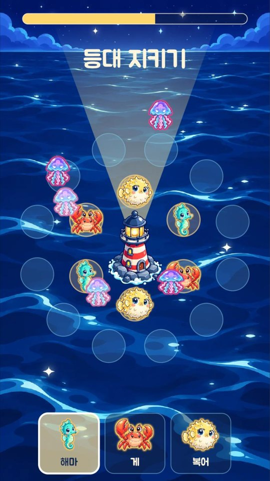
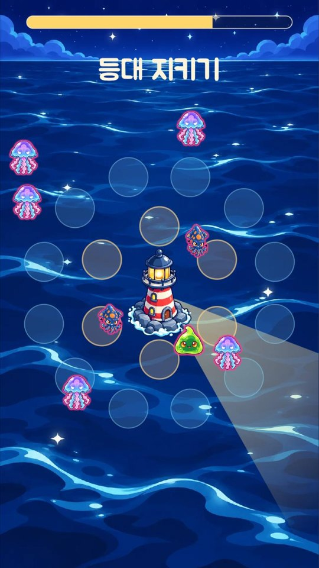
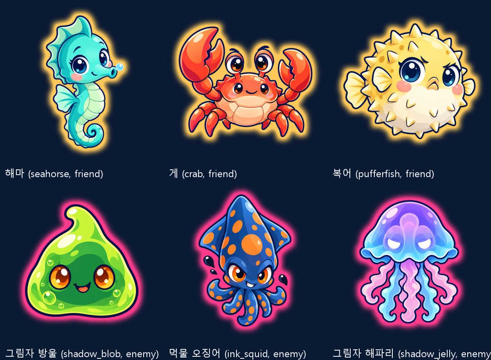
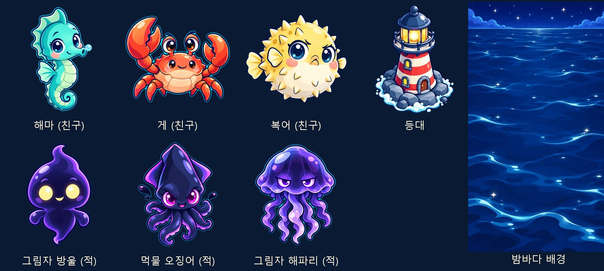
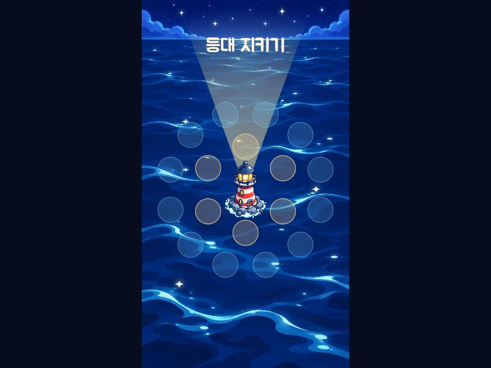
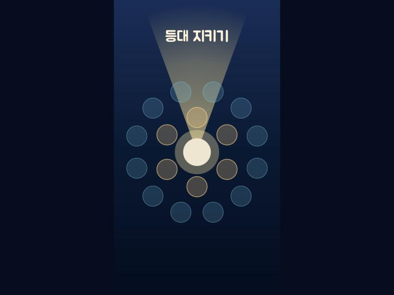
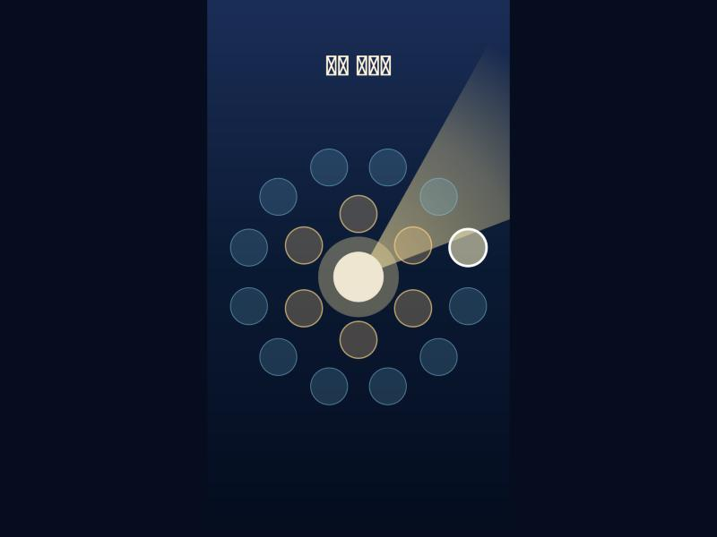

🗼 등대 지키기 · 게임 미리보기
할 일 목록 · 작업 기록 · 계획서 plan.md · 루프 구조 docs/loop.md
5단계 카드 007 · 친구 놓기와 자동 공격 (2026-10-20)
아래 쟁반에서 친구를 골라 자리에 놓으면 사거리 안 적을 저절로 공격한다.

4단계 카드 006 · 사방에서 오는 적과 등대 불빛 (2026-10-20)
적이 사방에서 와서 등대를 갉고, 위쪽 막대가 줄어든다. 빛줄기 속 적은 느려진다.

3단계 카드 005 · 컷아웃 애니메이션과 편 오라 (2026-10-20)
여섯 캐릭터 애니메이션 시트. 친구는 금빛, 적은 분홍빛 오라로 구분. 적 셋은 알록달록하게 다시 그림. 움직임은 preview/05_<id>.gif.

3단계 카드 004 · 그림 (2026-10-20)
Codex 그림 8개 (친구 셋·적 셋·등대·밤바다). 캐릭터는 모두 앞을 본다. 게임에는 밤바다 위 가운데 등대. 사용자 승인.


3단계 카드 003 · 주아 글꼴 (2026-10-20)
제목이 네모 대신 주아 글꼴로. 글꼴은 쓰는 글자만 남겨 42 KB. 그림 도구 8개를 가져왔다 (그림은 카드 004).

2단계 · 등대 둘레 자리와 입력 (루프 첫 카드, 2026-10-20)
자리 18개(안쪽 노랑 · 바깥 물빛), 누르면 흰 테두리로 고르기, 끌면 등대 빛이 손가락 쪽으로. tester → implementer → reviewer 거절 → 2바퀴 → 승인.

1단계 · 세로 빈 판 (2026-10-20)
실제 사이트(GitHub Pages)에 뜬 첫 화면: 세로 720 × 1280 판, 밤바다, 가운데 등대 자리. 한글 제목은 글꼴이 아직 없어 네모로 보인다 (3단계에서 글꼴).